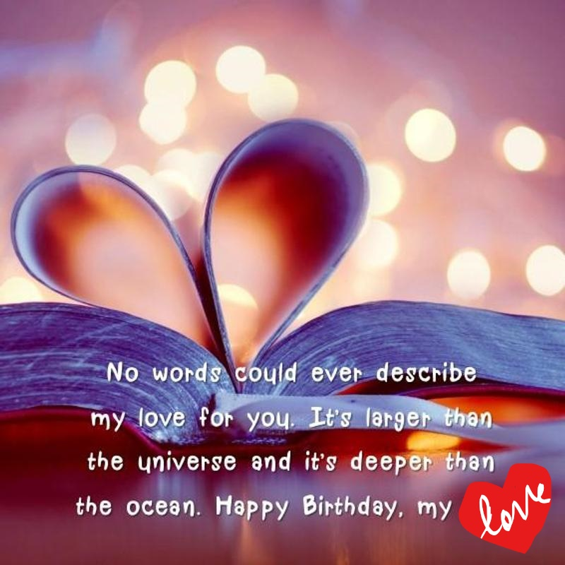
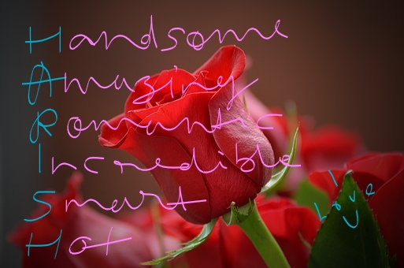

💓Khas nahi bahut khas ho tum mere liye💓
💓Tumhara darza bahut upar hai, khas hai mere dil me, meri aankhon me aur meri life me.. tum kabil aur hakdaar ho har uss chiz ke liye jis pe tum hath rakh do.. tumhe iss baat ki khabar bhi hai ya nahi kya pata.. Mere paas jab samay tha tab kabhi pyar ke bare me socha nahi, uske baad to pyar, emotions, naate riste sab se bharosa uth gaya tha.. mera dil bus jinda rehne ke liye dhadakta tha.. lekin kahi na kahi dil ko aur meri aankhon ko kisi ka intezaar tha.. bus wo chehra tab samne aaya jab tum aaye life me... tumse pyar hona tha bus ho gaya💓
💓Barso baad jab tumhe pehli baar uss din dekh na.. wo first look jis tarah tum meri taraf badh rahe the.. wow.. my heart skipped a beat.. it still gives me goosebumps everytime I remember that scene..
Pata hai, tum kafi hot dikhte ho, smile to killer hai hi sathe me tumhare lower lips pe bilkul middle me ek chota sa til hai wo bhi jaanlewa hai💓
💓Mujhe ye soch ke hairani hoti hai ki meri class me mere aankhon ke samne aisa ladka tha aur mujhe pata hi nahi tha.. Thanks, I am so so grateful to u that u approached me and gave me this precious and rare opportunity to know someone incredible like u..and I love u for that.. kyunki tab tak life me main kisi bhi aise ladke ko na mili thi na janti thi jo sabse alag ho.. alag level ka boldness, fearlessness, wo passion, direct, upfront, straighforward, transparent intentions, dare to speak one's mind, down to earth, romantic, hot, handsome, intelligent, daring, amazing communication style, decent, humorous, emotional, aur sabse badi baat empathetic and truly respectful.. uske upar se tumhara wo ek sawal jo tumne mujhse pucha tha, bahut tough wala himmat aur dareness chahiye, iss level ka himmat dekh ke main life me pehli baar kisi ladke se itna impress hui, yaar main tumpe fida ho gayi thi aur dil me ek hi baat aayi thi ki ladka ho to aisa..WOW..mujhe usi din usi waqt tumse pyar ho gaya tha..lekin tumhare kai baar puchne ke baad bhi main admit aur acknowledge nahi kar payi apni feelings.. aur tum kehte ho ki maine der kar di.. sirf isliye ki main kabhi bhi tumhare jaise insaan ko lightly nahi le sakti thi not even in my dreams.. mujhe meri feelings ko lekar 1000% sure hona tha..ye bahut jaruri hota hai.. aur jis din main sure ho gayi ki I am seriously in love with u, uss din ke baad se aaj tak, abhi tak kuch nahi badla na kabhi badlega.. tumhare liye pyar badhta hi gaya irrespective of any circumstances.. der karne ka enough saja bhugat chuki hu ab to MAAF kar do.. I love u Harish, I really do!💓
💓Kabhi sochti hu ki ye sab kyun hua aur jaise situations hain life me abhi, aise me kyun.. sirf isliye ki bhagwan kisi ko bhi bina wajah itni badi saja nahi dete, shayad isliye hume milaya hoga I am sure💓
💓Ek aur bahut hi important baat, kabhi ye mat sochna ki main tumhe tum jinse bhi pyar karte ho unse dur karne ka soch bhi sakti hu.. never..because I love you.. tumhari har chiz se tum jitna pyar karte ho utna hi main bhi karti hu aur karungi hamesha, ye alag baat hai ki kabhi sabit karne ka mauka nahi mila.. mila to ye naturally sabit ho jayega.. believe me ye bus aise hi bolne ke liye nahi bol rahi, main aisi hi hu.. its straight from my heart, true and very pure💓💓Agar kuch acha nahi laga ya maine unknowingly tumhara dil dukhaya to I am sorry.. I am here to love u, give u all the happiness and keep you happy and healthy always.. I can never ever think of hurting u knowingly or unknowingly💓